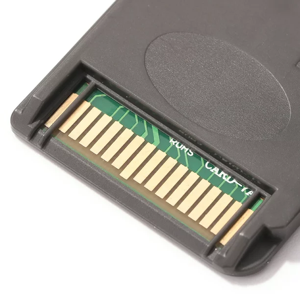
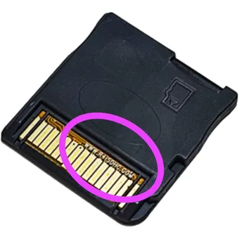
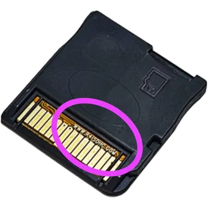
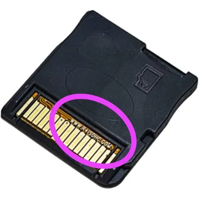

Información
Si Tienes una Tarjeta R4 que no Muestre el Menu de Juegos o se te Borraron los Archivos de la Memoria o Simplemente Perdiste la Memoria no Pasa Nada ya que Aqui Estan los Archivos del Sistema para que Puedas Volver a Usar tu R4 de Nuevo.
-
Lo que Tienes que Hacer es:
- Descargar los Archivos Necesarios
- Descompromir El Archivo
- Colocar el Contenido en la Raiz de la SD de tu R4
Verificar R4 Original
Si Tienes Alguna Duda de si tu Tarjeta R4 es Original y no Tengas que Descargar los Archivos Insesariamente.
-
Verifica lo Siguiente Antes de Descargar los Archivos:
- Mira si tu Tarjeta R4 Tenga Pines Color Verde o Amarillos, en Algunos Casos Pueden Ser Rojos pero por lo General Son de Esos dos Colores Principalmente.
- Verifica que la Parte Delantera o la Trasera Tenga la Pagina Oficial r4isdhc.com.

 

